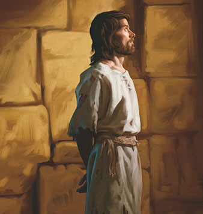
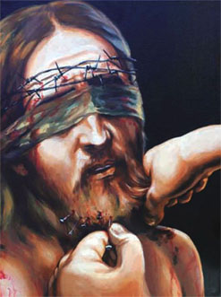
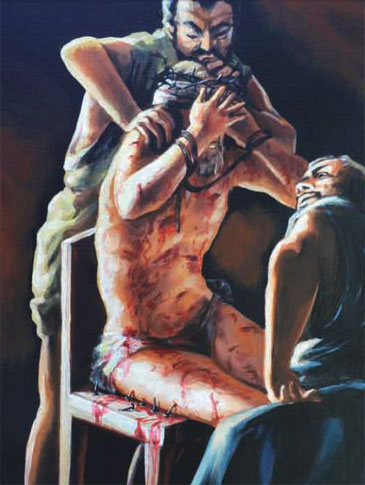
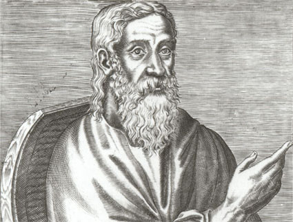
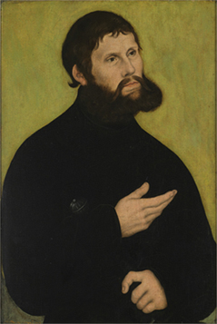
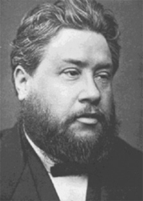
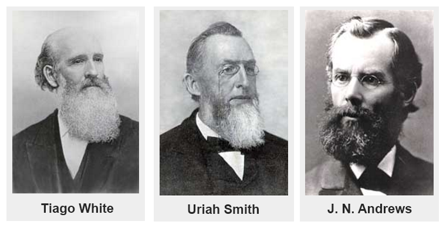
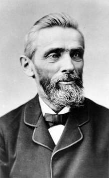

Dada a grande resistência e rejeição da natureza divina de Cristo, por parte dos pseudos cristãos, máxime, os evangélicos, seus corações estão recrudescidos, semeando doutrinas falsas, frutos da natureza pecaminosa que permeia seus corações regados pelos desejos impudicos, cobiçosos e avarentos, é este o real motivo por que 2 Timóteo 3:7. Contaminam os habitantes da terra com suas amargas mentiras, ensinando os homens a transgredir a Lei os Estatutos e os Preceitos de Deus, condenando-os a perdição, pregam que haverá paz e segurança, quando Isaías 24:5-6.
Insta esclarecer, que as calamidades, desordem e violência que impera na terra são frutos dos ensinamentos corrompidos, que tem atraído à ira de Deus, a ponto do Soberano do Universo sentenciar este mundo, condenando-o a destruição completa. Se os estudiosos da Bíblia ensinam as almas a transgredir a santa Lei de Deus, muito mais podem anular os preceitos, dentre eles o mais odiado, o uso da barba. Quem pode o mais pode o menos. Cumpre lembrar, que entre os judeus, e de modo geral na Igreja cristã do Oriente, na reforma protestante com Lutero, mais a frente com Carlos Spurgeon e os pioneiros adventistas, sempre foi atribuída grande importância ao preceito da barba, como sinal de excelsa varonilidade. Diante do exposto, convém indagar, o que é barba?
São pelos que crescem no queixo e nas bochechas do homem. Nas Escrituras Hebraicas, za qán é a palavra para barba, ao passo que sa fám, relativo ao lábio, é traduzida de forma variada pelos tradutores por barba, bigode e lábio superior. Em alguns casos, a palavra za qán não se refere à barba, mas ao queixo.
Certo irmão da Igreja Adventista nominal ficou impressionado com os ditames divinos que ordenam usar a barba, ele disse: "Há alguns meses, minha atenção foi voltada juntamente com a outros irmãos para Levítico 19:27 e 21:5. A partir de então, não fiz mais a barba. Iniciei, porém, um estudo bíblico minucioso a respeito e com a ajuda de um irmão, pude obter a correta compreensão bíblica sobre o tema". O fim da pesquisa resultou em ignorar a ordem divina e acatar a ordem humana, satisfazendo os desejos do coração natural, pecaminoso, ele fundamentou que usar a barba como preceito: "Não é esse, porém, o ensino das Escrituras. Pode-se usar barba, por opção pessoal ou outro motivo, porém não porque a Bíblia ordene. Há muitas fotos de pioneiros, do tempo de Ellen G. White, que não tinham barba, além de exemplos bíblicos como o de José". Vejam, com efeito, que o irmão lembrou-se que existem fotos dos pioneiros sem barba (inclusive de alguns que usavam e a igreja Adventista coloca a foto deles jovens sem barba) e esqueceu-se de mencionar que a maioria dos pioneiros usava barba, inclusive Tiago White, marido de Ellen White. Não podemos ignorar que o acervo doutrinário acolhido pelo adventismo foi construído paulatinamente, ao longo do tempo, exemplo, Sábado, regime alimentar, doutrina do Santuário, justificação pela fé, dízimos etc. Todas as doutrinas defendidas pela adventismo foram construídas ao longo do tempo, nem todos colocavam de inopino em prática as luzes descobertas, assim como a barba. Depois de receberem iluminação da santidade do Sábado, os Pioneiros adventistas, se debruçaram nas Escrituras investigando os pormenores da igreja primitiva garimpando as pérolas da verdade, para colocarem em prática, assim foram iluminados acerca de detalhes da Santa Ceia e com certeza a luz acerca da barba.
Os pioneiros da Igreja Adventista do Sétimo Dia, tendo aceito a verdade do sábado, se lançaram zelosamente para seguir a Palavra de Deus em cada pormenor, ao mesmo tempo em que cuidavam para se resguardar contra interpretações distorcidas da Palavra e quaisquer extremismos ou fanatismos. Viram claramente os privilégios e as obrigações da Ceia do Senhor, estabelecida para a Igreja por nosso Senhor. Havia indagações com respeito ao lava-pés e ao ósculo santo. Nessa visão, o Senhor esclareceu alguns pontos delicados que orientariam e protegeriam a Igreja emergente.
Ellen G. White, Primeiros Escritos, 1988, pág 301
No decorrer deste estudo, veremos que Carlos Spurgeon, aceitou o uso da barba como norma doutrinária e ensinou a seus membros, investigando a igreja primitiva.
Quanto ao episódio da barba de José, cumpre examinar detidamente o texto: Gênesis 41:14. A tradução utilizada é a Matos Soares, aqui se vislumbra que José usava barba, e quando chamado na presença de Faraó barbearam-no, ao passo, que em seus escritos a irmã White Diz:
Mandaram chamar imediatamente a José; tirou suas roupas de prisioneiro, barbeou-se, pois o cabelo crescera muito durante o tempo de opróbrio e reclusão. Foi então conduzido à presença do rei.
Ellen G. White, Patriarcas Profetas, pág 220
Existe uma aparente contradição entre os dois textos, precisamos compreender a cultura egípcia para elucidar a questão.
No Egito nenhuma pessoa podia se apresentar diante de Faraó sem estar devidamente apresentável (vestes limpas, barbeado, etc). Por outro lado, era costume dos egípcios não usar barbas; quando muito usavam um pequeno cavanhaque
Hist. Antigua, Barcelona, pág 86
José era escravo e prisioneiro de Faraó, todos quantos fossem convocados pelo soberano do Egito, tinham que se apresentar barbeados, trajando vestes limpas e asseado. A questão em comento nos compele a inferir, que a ordem de Faraó era uma lei, não importa de quem era à mão que utilizou a lamina que removeu a barba de José, Se foi ele ou algum oficial de Faraó, o certo é que ele tinha que se apresentar barbeado e asseado. José não tinha escolha neste particular. Embora alguns irmãos alegasse que José podia escolher manter a barba, como escolheu não pecar contra a mulher de Putifar para não ferir a Lei de Deus. Quando José resistiu à tentação evitando cometer adultério ele não era prisioneiro, era um escravo privilegiado e estava cumprindo ordem direta, de Deus e de Putifar que entregou em suas mãos toda a sua casa, salvo sua esposa. Ao passo que no cárcere ele era prisioneiro sentenciado por crime, mesmo sendo inocente, estava sujeito aos rigores da enxovia e sofreu nos primeiros dias até Deus suavizar seu infortúnio, portanto, no primeiro caso ele tinha escolha e escolheu fazer o certo, no segundo caso ele não desfrutava de escolha. Ademais, este preceito, nos dias de José era passado de pais para filho, Deus ainda não havia codificado a Lei por intermédio de seu servo Moisés, fato que correu 400 anos após a morte de José, portanto não houve quebra da lei ou violação do preceito.
Como podemos ver, o irmão continua seus argumentos: "Outra evidência de que o uso da barba não é uma exigência divina para os homens dentre Seu povo é o fato de que no próprio livro de Levítico o Senhor recomenda que a barba seja raspada em alguns casos por razões de saúde. Ele cunha alguns textos para provar que Deus está proibindo seu povo usar barba": Levítico 13:29-30.
Seguindo a linha de raciocínio do irmão, usar barba é sinal de pecado, o crente precisa se purificar, e para isso, se faz necessário raspar a barba. Se essa tese é verdadeira, todos os crentes serão compelidos a raspar a barba, a cabeça e as sobrancelhas, para se apresentarem ao Soberano do Universo purificado. Quiçá, é por isso que as igrejas evangélicas, contaminadas com a lepra do pecado (secularismo) adotam raspar as barbas e a cabeça dos homens e as sobrancelhas das irmãs.
É certo, contudo, que Deus proíbe o seu povo cortar ou danificar a barba, como se vê: Levítico 19:27-28. Salvo no caso de lepra, era a única permissão para raspar a barba, a cabeça, sobrancelhas e todos os pelos era uma ordem divina: Levítico 14:1-3, 8-9. Por seu turno, merece esclarecer que depois do período de purificação, os pecados eram purgados e ao servo de Deus era permitido deixar a barba crescer novamente, aqueles que raspam suas babas é porque estão leprosos, e se nunca deixam suas barbas crescerem é sinal de que a lepra do pecado continua em seu coração, nessa situação deveras, tem que tirar a barba.
Cabe aqui esclarecer, que lepra é sinal de pecado e não a barba, pecado é a transgressão da Lei de Deus, temos o exemplo de Miriã que se rebelou contra a ordem divina, acusando Moisés: Números 12:9-10. Certamente ela cumpriu o período de purificação, depois retornou ao acampamento de Israel purificada. Na mesma toada, são os ensinamentos da irmã White, que ratifica a lepra como pecado merecedor do castigo divino:
De todas as doenças conhecidas no Oriente, era a lepra a mais temida. Seu caráter incurável e contagioso, o terrível efeito sobre as vítimas, enchiam de temor os mais valorosos. Entre os judeus, era considerada um juízo sobre o pecado, sendo por isso chamada: "o açoite", "o dedo de Deus". Profundamente arraigada, mortal, era tida como símbolo do pecado. A lei ritual declarava imundo o leproso. Como pessoa já morta, era excluído das habitações dos homens. Tudo que tocava ficava imundo. O ar era poluído por seu hálito. Uma pessoa suspeita dessa moléstia, devia-se apresentar aos sacerdotes, que tinham de examinar e decidir o caso. Sendo declarado leproso, era separado da família, isolado da congregação de Israel, e condenado a conviver unicamente com os aflitos de idêntico mal. A lei era inflexível em suas exigências. Os próprios reis e principais não estavam isentos. Um rei atacado dessa terrível moléstia, tinha de renunciar ao cetro e fugir da sociedade.
Separado de amigos e parentes, devia o leproso sofrer a maldição de sua enfermidade. Era obrigado a publicar a própria desgraça, a rasgar os vestidos, a fazer soar o alarme, advertindo todos para fugirem de sua contaminadora presença. O grito "impuro! impuro!" soltado em lamentosos tons pelo pobre exilado, era um sinal ouvido com temor e aversão.
Ellen G. White, O Desejado de Todas as Nações, pág 239
Se Israel guardasse todos os Mandamentos, Estatutos e Preceitos de Deus, era uma condição, estavam sob a proteção de Deus e livres da lepra, enfermidades ou qualquer praga: Deuteronômio 28:15;21.
Como visto alhures, o Senhor proíbe seu povo cortar os cabelos arredondando os cantos, bem como danificar a barba, salvo em caso de lepra: Levítico 19:27. Este preceito não foi direcionado exclusivamente ao povo, máxime, aos sacerdotes, os líderes devem ser o exemplo, sendo assim o Senhor ordenou: Levítivo 21:5. Os hebreus foram instruídos a usarem a barba completa, sem desfigurá-la de forma alguma. A barba completa significa separação para Deus. No entanto, existem igrejas que embora defenda o uso da barba como norma, danificam, aparando a extremidade, violando o preceito divino alegando decência e ordem, invocando instruções do profeta Ezequiel, nos termos seguintes: Ezequiel 44:20. No texto em comento, o Senhor está ordenando tosquiar o cabelo sem arredondar, e não aparar a barba. Com efeito, é de lamentar, que pastores jactanciosos aparam suas barbas e ensinam seus membros a seguir seus maus exemplos baseado neste texto, com certeza é uma interpretação forçada retirada de seu legitimo contexto, para alimentar a natureza pecaminosa de seus corações carnais.
É imperioso destacar, que nos tempos bíblicos, os homens que arredondavam suas barbas ou que usavam apenas cavanhaque eram adoradores de Baco, Baal e de outras divindades pagãs, tal como os homens que aparam suas barbas nos tempos hodiernos, também oferecem sacrifícios sob o altar da moda, alimentando ídolos em seus corações, alegam atender exigências sociais formuladas por homens em detrimento do preceito divino, Romanos 1:25.
A Lei proíbe oferecer sacrifício ao Criador com defeito. A barba não é diferente, tosquiar, raspar ou mutilar a barba é uma oferta defeituosa, quando usada por preceito. Perquirindo as Escrituras, vislumbramos que homens com a barba mutilada eram impedidos de se apresentarem diante de Deus, não entravam nem em Jerusalém, centro de adoração ao Senhor, conforme se depreende no caso dos servos de Davi que tiveram suas roupas rasgadas e as barbas mutiladas: 2 Samuel 10:1-7.
Considerando o valor que a barba tinha para os servos do Deus único, com este ato, o rei dos amonitas deflagrou uma verdadeira declaração de guerra, cortar a barba de um judeu era um insulto letal, no caso em tela só poderia ser vingado com a guerra, como aconteceu.
É oportuno notar que não foi à exposição de suas nádegas que envergonhou aqueles homens, mas a mutilação de suas barbas. As roupas podiam ser reposta, todavia, a barba demora a crescer. A instrução de Davi para eles foi que permanecessem em Jericó até que a barba estivesse na norma, e depois retornassem para Jerusalém, não poderiam entrar na cidade do grande rei ou mesmo em sua presença com as barbas mutiladas, esta é uma prova contundente, Deus não aceita seus servos mutilarem ou apararem suas barbas. Davi derrotou os amonitas e os sírios; aquela guerra foi deflagrada por causa da mutilação da barba dos servos de Deus.
Com efeito, em caso de tristeza, aflição, dor e desolação, os servos de Deus, rasgavam suas vestes, não arrumavam suas barbas em total descuido levados pela dor de suas aflições. Temos dois exemplos, o primeiro caso, trata-se de Mifibosete, filho de Jonatas, neto do rei Saul, que foi adotado pelo rei Davi, lemos: 2 Samuel 19:24. A dor de Mifibosete é oriunda da injustiça sofrida por Davi, ao empreender fuga de seu filho Absalão que comandava parte do exército, com escopo de derrotar e matar seu genitor. No texto em comento, vislumbra-se que Mifibosete, não lavou os pés, nem as vestes, nem arrumou a barba, em total desleixo, quanto à higiene pessoal, em sinal de profunda tristeza compartilhada pelos infortúnios sofridos por Davi. Embora alguns pastores aleguem que Mifibosete não fez a barba sinalizando que ele não aparou a barba. É cediço que não era costume dos judeus apararem suas barbas por tratar-se de oferta defeituosa perante o soberano do universo, como se vê no texto da irmã White:
A cena do pátio do templo nunca mais se apagaria da memória deles. Era assinalado o contraste entre Jesus e o sumo sacerdote, quando juntos falavam. O orgulhoso dignitário do templo estava trajado de ricas e custosas vestimentas. Tinha na cabeça uma brilhante tiara. Seu porte era majestoso, os cabelos e a longa barba prateados pela idade. Sua aparência enchia de respeito os que o viam. Perante essa augusta personagem, achava-Se a Majestade do Céu, sem adorno ou ostentação.
Ellen G. White, O Desejado de Todas as Nações, pág 594
O contraste assinalado entre o sumo sacerdote e Cristo, estava na ostentação e ricas vestes, no entanto, eram semelhantes quanto a não aparar a barba, que impunha respeito dos hebreus. O sumo sacerdote era um exemplo, tal que o óleo precioso de sua unção que descia por ela (barba) sobre a gola das suas vestes: Salmos 133:2.
No segundo exemplo, nota-se que não cuidar, arrancar os cabelos da cabeça ou da própria barba era sinal de grande amargura, conforme se verifica com Esdras quando soube que os filhos de Israel estavam apostatados e recusavam separar-se dos povos pagãos, inclusive contraindo casamentos com suas filhas: Esdras 9:3.
Em nenhum dos dois casos temos permissão para aparar ou raspar a barba, pelo contrário, as Escrituras ensinam que devemos primar pelo asseio conservando a barba limpa e incólume de qualquer artificio que a danifique
TEXTOS QUE O SENHOR ORDENA RASPAR A BARBA
Podemos elencar vários textos esculpindo uma ordem de Deus para raspar a barba, contudo, convém estudar a motivação desta ordem drástica e suas consequências. Vamos encetar, com uma sentença contra Moabe, esculpida no livro do profeta Isaías: Isaias 15:1-2.
Convém destacar, que os amonitas e moabitas surgiram do evento incestuoso de Ló e suas filhas, quando fugiram de Sodoma, elas conceberam e deram à luz: Gênesis 19:37-38.
Amonitas e Moabitas foram repudiados pelo Senhor, por se recusarem socorrer Israel com suprimentos quando se dirigiam para a terra prometida, o Senhor os privou de comparecerem a sua presença, por assalariarem Balaão com escopo de amaldiçoar o povo de Israel, foi isso que se achou escrito no livro do Senhor: Neemias 13:1-2.
No primeiro momento, o Senhor estipulou um prazo, depois os repudiou eternamente, como se vê no livro da Lei: Deuteronômio 23:3.
Nos textos elencados, inferimos que o Senhor rejeitou os amonitas e moabitas para sempre. Quando o texto diz que toda barba será rapada, O Soberano do Universo está figuradamente insinuando que os moabitas sofrerão assolação, destruição de suas cidades e grande sofrimento. O raspar a cabeça e a barba, como visto alhures, é sinal de profunda tristeza, imenso pesar e vergonha para o povo de Deus.
No segundo texto bíblico, contemplamos o mesmo contexto da passagem bíblica anterior, assim narrada por Jeremias: Jeremias 48:37. Mais uma vez, podemos inferir nitidamente que no antigo Israel, raspar a cabeça e a barba, simbolizava tristeza, aflição e dor. Segundo o Dicionário Bíblico Adventista p. 562, raspar a cabeça e a barba e fazer cortes no corpo eram sinais de aflição, ratificado pelo profeta que diz: Jeremias 16:6.
Este terceiro texto traz a lume, por meio do símbolo do cabelo e da barba, o juízo que estava iminente a cair sobre Jerusalém, por sua rebelião e idolatria, por força da fome espada e dispersão; assim diz o Senhor: Ezequiel 5:1.
O profeta Ezequiel deveria tomar uma navalha de barbeiro ou uma espada e usar como navalha, na verdade eram um símbolo de devastação operada por um exército inimigo que iria afligir o povo, no caso os Babilônicos. O Dicionário Bíblico Adventista, explica que o raspar a barba pelo profeta significa que:
Ezequiel é instruído a realizar um ato proibido como representação simbólica. Era ilícito a um sacerdote rapar a cabeça ou a barba (Lv. 21:5).
Dicionário Bíblico Adventista, pág 647
Na verdade, era proibido, não só aos sacerdotes, mas, a qualquer judeu raspar a cabeça ou a barba, salvo em caso de lepra.
É de bom tom notar o quadro do julgamento de Deus sobre o seu povo, Israel, como uma navalha que é passada sobre a barba de toda a nação é um retrato intencional de uma desgraça e de um julgamento extremamente severo. Quando Deus queria mostrar e indicar a severidade de Seu julgamento sobre Seu povo por causa do pecado e da idolatria, Ele fazia isso usando a analogia de rapar o símbolo mais amado deles — a barba. Portanto, a maior indignidade que poderia ser feita a um judeu era arrancar sua barba — um sinal seguro do julgamento de Deus é ter a barba arrancada. Se você quiser entender o que foi feito com o Senhor Jesus Cristo, precisa entender isto. Quando nosso Senhor foi feito nosso substituto e sofreu em nosso lugar, lemos: Isaías 50:6.
Por fim, analisaremos o último texto da série. É interessante notar que, quando o povo de Deus pecava e recusava se arrepender, Deus usava a imagem da barba raspada para transmitir a mensagem do vindouro julgamento sobre Seu povo. O profeta Isaías predisse que os assírios conquistariam o reino do norte de Israel, rapando a barba de Israel com uma navalha e trazendo julgamento sobre o povo. Como visto, o profeta Ezequiel usou um quadro similar para ilustrar a destruição de Jerusalém pelos babilônios. O profeta narrou à sentença divina dizendo: Isaías 7:20.
A navalha alugada era o rei dos Assírios, dias de trevas e perigos estavam diante de Judá. O rei da assíria invadiria não só Israel, mas também Judá, como uma navalha alugada. O profeta comparou a nação a um homem sujeito a indignidade suprema de ter os pelos e cabelos raspados da cabeça e da barba, uma vez, que os judeus consideram a mutilação dos cabelos da cabeça e da barba uma desgraça. Como restou explícito, os textos apresentados são simbólicos, o raspar a barba e os cabelos nos aludido textos elencados, não é uma ordem para remover as barbas nos prostrando a sociedade ou a moda, pelo contrário foram simbolizados quando Israel se apostatava curvando seus joelhos aos ídolos pagãos. Raspar a barba e a cabeça era sinal de aflição, castigo e pranto.
O USO DA BARBA NA IGREJA PATRÍSTICA

É um dever cristão espelhar-se em seu mestre, Jesus Cristo, aquele que não pode errar. Jesus é nosso modelo em tudo, portanto, convém indagar, Jesus usava o preceito da barba? Para responder a esta indagação, temos que nos valer de uma profecia esculpida no livro do profeta Isaías que diz: Isaías 50:6. Este texto comprova que Jesus, como todo judeu, usava a barba literalmente como preceito de seu Pai. Seguindo escritos do profeta, devemos recorrer a Lei e ao Testemunho (Isaías 8:20), portanto, vamos nos valer do testemunho da irmã White, onde se lê:
A multidão clamava pelo sangue de Jesus. Cruelmente O açoitaram e puseram sobre Ele uma velha veste real de púrpura, cingindo-Lhe a sagrada cabeça com uma coroa de espinhos. Puseram-Lhe na mão uma cana, prostravam-se diante dEle e escarnecedoramente O saudavam: "Salve, Rei dos judeus!" Mateus 27:29. Tiraram-Lhe então da mão a cana, e com ela O feriram na cabeça, fazendo com que os espinhos penetrassem em Sua fronte e o sangue Lhe escorresse pelo rosto e barba.
Ellen G. White, História da Redenção, 2005, pág 214 / Primeiros Escritos, pág 170 / O Desejado de Todas as Nações, pág 518
Não resta dúvidas que Jesus usava barba, com certeza os discípulos também, todavia, teólogos e pastores alegam que a igreja primitiva usava a barba e os outros preceitos como tradição. Assim sendo, não podemos nos eximir de usar a barba alicerçado neste argumento, haja vista, que somos compelidos a acolher os ensinamentos de Paulo no Novo Testamento, que diz: I Coríntios 11:1-2. O apóstolo Paulo manda imitarmos a Cristo e ele próprio que usavam barba, como também reter as demais tradições, ou seja, obedecer tal como ele ensinou por carta e por exemplo, destarte, exorta a igreja a permanecer constante na obediência, no caso em comento, se a barba é uma tradição da igreja primitiva, o discípulo de Cristo está mandando usar a barba e não retroceder deste dever levado por vento de doutrina, comparação ou suposições, ele exorta: II Tessalonicenses 2:15. A palavra inspirada nos ensina que nenhum preceito de Deus é dado em vão, portanto, Paulo e os demais discípulos não ensinavam sofismas. O que ele ensinava em seus escritos eram mandamentos do Senhor e devia ser cumprido, como se vê: I Coríntios 14:37. Portanto, Filipenses 4:9. A Igreja Remanescente está umbilicalmente adstrita a Mensagem do Terceiro Anjo, embora vivendo no período de Laodicéia, a ordem do Senhor é para voltar à pureza da doutrina do período de Éfeso (cavalo branco), receber a natureza divina de Cristo em porção dobrada (justiça eterna) na chuva serôdia para unir-se ao Terceiro Anjo. Cumprindo esta ordem soberana, a igreja dos últimos dias está compelida a imitar a igreja primitiva em tudo, este é o modelo deixado por Jesus, segundo nos exorta o apóstolo: Filipenses 3:17.
Portando as credenciais divinas, a Igreja de Cristo se unirá ao Terceiro Anjo, proclamando a última mensagem de misericórdia, advertindo ao povo da terra: Apocalipse 18:4. Revestida com a natureza divina de Cristo, unida com o Terceiro Anjo, zelando pela doutrina da Igreja primitiva e ensinando por palavra e exemplo, a Igreja Remanescente será reconhecida pelos sinceros que estão acorrentados em Roma (igreja católica) e em suas filhas (igrejas evangélicas), não errarão o caminho por que: Isaías 61:9. Para cumprir esta profecia, a igreja que desperta a ira de Satanás, com certeza obedecerá aos Mandamentos, Estatutos e Preceitos de Deus inclusive a barba, contra esta Igreja (mulher): Apocalipse 12:17. Note, que a descendência (Igreja Remanescente) que falou o profeta Isaías será conhecida pelos sinceros que estão nas igrejas apostatadas, reconhecerão a verdadeira igreja de Deus por guardar os mandamentos, estatutos e preceitos, como a barba, são os mesmos que o diabo vai se irar e perseguir através de seus instrumentos humanos, tanto religiosos como civis.

Entre os cristãos primitivos, Clemente bispo de Alexandria, cujo nome é Tito Flávio Clemente, nasceu em Atenas por volta de 150. Ele condenou em seu livro "O Pedagogo" o uso de brincos, maquiagem, joias, pintura dos olhos e dos cabelos, provavelmente escreveu mais sobre os males da remoção da barba do que todos os outros autores cristãos primitivos juntos. Como os judeus, Clemente chamava a barba de "adorno natural do homem" e dizia que "nunca era permissível" raspá-la. (The Fathers of the Church, 218). "Os fios da barba estão contados", Clemente adverte aos seus leitores: "Procurar beleza na face lisa e sem pelos é pura efeminação, se feito por um homem." (The Fathers of the Church, 215). "Deus planejou que a mulher tenha a pele suave e lisa, orgulhando-se nas mechas naturais de seus cabelos, como um cavalo com sua crista", escreveu Clemente. "Mas ao homem, Ele adornou como o leão, com uma barba..." (The Fathers of the Church, 214).
Os cristãos primitivos acreditavam e sabiamente ensinavam que Deus fez o homem com barba para distingui-lo da mulher, de modo que era proibido o cristão raspar ou aparar a barba, como ensinava Clemente:
Esta, então, é a marca do homem, a barba. Por ela, ele é reconhecido como um homem. Ela é mais antiga do que Eva. É o símbolo da natureza superior.... Portanto, é uma atitude ímpia profanar o símbolo da masculinidade, os pelos.
Clemente de Alexandria (195 d.C.) Ante-Nicene Fathers vol 2 pág 275
Quando Clemente de Alexandria taxa de atitude ímpia profanar a barba, leia-se, ela não deve ser danificada, tosquiada ou aparada. Por que nos dizeres do Patrístico:
Sem dúvidas, este distintivo do homem, que é a barba, é mais antigo do que Eva. E é símbolo de uma natureza superior. Deus julgou oportuno que conviesse ao homem o cabelo, e semeou todo o seu corpo com pelos; e tirou de sua costela, quanto do liso e delicado havia, formando - fisicamente receptiva – a Eva, uma mulher, sua colaboradora na procriação da prole e no governo do lar". Então é um tipo de impiedade, e um crime contra a natureza, destruir esse sinal de masculinidade (a barba). Tais coisas, portanto, não convêm aos cristãos. Diz o Senhor: Até os cabelos de vossa cabeça estão contados. Também estão os pelos da barba e de todo o corpo.
Então, de nenhum modo se deve arrancá-los, contra a vontade de Deus, que os tem contado. Acaso não reconheceis, exclama o apóstolo, que Cristo Jesus está em vós?
Clemente de Alexandria (195 d.C.) O Pedagogo, pág 242
Segundo os sábios ensinamentos de Clemente de Alexandria, quem tira sua barba, não está com Jesus, que conta todos os nossos cabelos, inclusive os da barba, e vai cobrar no dia do ajuste de contas. Para Clemente:
Raspar-se e depilar-se, adornar os cabelos: tratando-se de um homem, como não conclui que se trata de uma ação degenerada?
Clemente de Alexandria (195 d.C.) O Pedagogo, pág 240
O depilar-se era proibido na igreja primitiva, por tratar-se de uma ação degenerada, esta regra era seguida pelos cristãos da igreja primitiva. Nos dias de hoje, com certeza Clemente seria chamado de homofóbico e inflamaria a comunidade homossexual, veja por que:
Mas os homens que se penteiam com esmero, que fazem depilação, raspam a barba e, diante do espelho, pintam as bochechas, não são efeminados?
Clemente de Alexandria (195 d.C.) O Pedagogo, pág 240
Na Igreja apostólica primitiva, o homem que raspava a barba era considerado afeminado, conforme se comprova nos belos escritos da lavra de Clemente Bispo de Alexandria:
Que afeminado é para o homem barbear-se, pentear-se com fineza e arrumar-se adiante do espelho barbeando-se e rapando-se a barba para que sejam lisas suas bochechas! Porque Deus quis que sejam finas as mulheres e lhe agrada seu cabelo longo como o dos cavalos. Mas enfeitou ao homem com a barba bem como a melena dos leões, e pôs belos em seu peito como um atributo do homem e sinal de sua força e domínio.
Clemente de Alexandria (195 d.C.)
A Igreja primitiva usava a barba como norma, para fazer diferença de outros povos que mutilavam as barbas de acordo com a exigência de adoração de seus deuses pagãos, eles acolhiam os ensinamentos do Senhor que diz: Levítico 10:10. Assim como os primogênitos eram separados para o Senhor, o uso da barba significava submissão a Deus. Um homem sem barba ou com a face barbeada e lisa indicava que era um escravo e que estava em submissão a outro homem. Dito de outra forma, estar privado de uma barba era, e ainda é em alguns lugares no Oriente, um distintivo de servidão — uma marca de infâmia, que degradava o indivíduo no meio dos outros homens, para o nível dos escravos e das mulheres.
Por esta razão, Clemente de Alexandria ensinava com vigor, que o cristão devia usar a barba como preceito, e a retratava como um sinal de virilidade, de força e poder:
Já os homens, assim como os leões, foram ornados com a barba e lhes outorgou virilidade como sinal de força e de poder. Assim também ornou os galos que combatem em defesa das galinhas com suas cristas, como se fosse elmos. Mas tão alto é o apreço que Deus professa por esses pelos que nascem no rosto dos homens, que os faz nascer junto com a prudência, e comprazendo-se em sua majestosa sabedoria, honrou a gravidade do aspecto com o cinza senil.
Clemente de Alexandria (195 d.C.) O Pedagogo, pág 241
Insta enaltecer mais uma prova de que era terminantemente proibido raspar a barba, na igreja primitiva:
Não é lícito barbear a barba, que é beleza natural, beleza nobre, "quem originariamente é barbudo e cuja puberdade está cheia de encanto"… É preciso que quem tenha recebido uma correta educação e em quem resida a paz, deixe calma sua própria barba.
Clemente de Alexandria (195 d.C.)
Clemente, mais uma vez nos enriquece com seus ensinamentos oriundos dos apóstolos. Não podemos olvidar que ele conheceu e conviveu com alguns irmãos que deram continuidade aos trabalhos na igreja apostólica, como Policarpo. Os ensinos dos apóstolos era a fonte de conhecimento de Policarpo, seguindo esses ensinamentos ele disse:
Não é licito raspar-se; a beleza natural de quem começa a ter bigode está graciosamente na flor da juventude. E já avançado em idade, unge radiante a barba, sobre a que desceu o perfume profético do venerável Arão.
Clemente de Alexandria (195 d.C.) O Pedagogo, pág 245
Tertuliano segue a linha de ensinamento dos Pais da igreja primitiva, asseverando que os homens cortam a barba por vaidade, assim como a danificam, em forma de cavanhaque, cortando-a em redor da boca:
Os homens têm suas próprias vaidades e enganos assim como o cortar a barba muito direito, recortando umas partes e barbeando ao redor da boca.
Tertuliano (197 d.C.)
Cipriano, outro Patrístico, ensinava que cortar a barba é costume dos pagãos, logo, os cristãos não tinham esse famigerado costume:
Entre seus costumes (dos pagãos) não tinha disciplina. Entre os homens se rapavam a barba.
Cipriano (250 d.C.)
Quanto aos cristãos ele ordenou manter o preceito de Deus, usando a barba sem danificar, como se vê:
A barba não deve ser rapada. "Não recortem sua barba."
Cipriano (250 d.C.)
Quando ele diz: não recortem suas barbas, está claramente ordenando a não aparar a barba, como alguns insistem em danificar alegando asseio, quando na verdade está alimentando a vaidade que dormita em seu coração carnal.
Por fim, Clemente de Alexandria ensina a cortar o bigode e justifica:
Também o bigode, por motivos de limpeza ao comer, recorta-se as pontas com tesoura, mas sem barbeá-lo o qual seria indecoroso. E sem tocar a barba das maxilas.
Clemente de Alexandria (195 d.C.)
Note que Clemente proíbe cortar os pelos das maxilas, que para alguns religiosos não é barba, alegam que não podem cortar as madeixas laterais, que a maxilas não é barba, portanto pode ser aparada, segundo ensinamentos de Clemente, e ele tem autoridade para isso, as maxilas são barbas como todos os pelos da face e não podem ser tosquiados ou raspados, lembrem-se, que Jesus contou todos eles.
Para aniquilar qualquer resquício de dúvida, de que a igreja primitiva usava a barba como norma, convém invocar o Concílio de Cartago, promovido pela igreja primitiva, em aproximadamente 200 d.C., se reuniu para discutir e tentar solucionar muitos problemas doutrinários na igreja, entre eles estavam o vestuário e a barba.
Aqui está uma citação do Concílio de Cartago sobre o traje imodesto:
Qualquer homem que vier à igreja com cabelos longos e a face barbeada e lisa, será excluído da comunhão, pois esse homem está vestido de forma imodesta.
Crocker & Brewster, Nova York, 1832 pág 154
O Quarto Concílio de Cartago, promovido em 398 d.C., com arrimo nas Escrituras decretou: "O clérigo não deixará seu cabelo crescer, nem removerá sua barba." Como visto o uso da barba pelos cristãos da igreja primitiva era norma, a decisão do quarto concílio de Cartago é uma prova irrefutável desta verdade, pois está em sintonia com as Escrituras, que diz: Levítico 19:27.
USO DA BARBA NA REFORMA PROTESTANTE DO SÉCULO XVI E REAVIVAMENTO DO SÉCULO XVIII E XIX

Passamos a estudar os servos de Deus da Reforma Protestante do século XVI e do Reavivamento espiritual do século XVIII e XIX. Lutero abriu um precedente deixando a barba crescer, e praticamente todos os reformadores europeus deliberadamente cultivaram suas barbas por se aproximar da igreja primitiva e como sinal de rejeição da igreja Católica, passando a barba clerical a ser uma norma reconhecida na Inglaterra e por toda a Reforma.
Foi no século 16 que o Grande Despertar ocorreu e veio a ser conhecido como a Reforma. Em 1517, Martinho Lutero afixou suas 95 teses na porta da igreja do castelo de Wittemberg, na Alemanha, e começou a pregar que "o justo viverá pela fé". É muito observável que sempre que a Palavra de Deus ajudou a cativar os pensamentos dos servos de Deus, eles foram compelidos a iluminar o mundo com os princípios da igreja primitiva, destarte, na Reforma Protestantes os homens passaram a usar cabelos tosquiados e deixaram a barba crescer, segundo ensinamentos doutrinários dos apóstolos de Jesus, tivera a igreja primitiva como espelho.
Contemporâneo de Lutero, o Reformador inglês Rowland Taylor, foi pastor da cidade de Hadley, alimentou o seu rebanho com a verdadeira doutrina. Segundo Foxe, (O Livro dos Mártires, 191). "Taylor havia mantido em sua comunidade o piedoso serviço religioso e a reforma do rei Eduardo VI, e com máxima fidelidade e zelo pregava contra a corrupção papista, que havia infectado todo o território a seu redor". Após a morte do rei Eduardo VI, foi perseguido e condenado como herege pelos bispos papistas que manipulavam a rainha Mary, que substituiu o rei Eduardo VI, que era seu irmão.
Rowland Taylor, orava de joelhos e mãos levantadas, como se vê:
Então o bispo chamou seus subalternos e disse: _ Retirem este sujeito daqui e levem-no para o tribunal do Rei. Digam ao carcereiro para vigiá-lo com rigor.
Então, caindo de joelhos e erguendo as mãos, disse o Dr. Taylor: _ Santo Deus, eu vos agradeço...
FOXE, John, 2003 O Livro dos Mártires, pág 205
Como era de se esperar, os cruéis e diabólicos bispos papistas o condenaram a morte no ano de nosso Senhor de 1555 por apontar os erros e idolatrias do papa. O reformador Rowland Taylor usava barba como norma, tal como a reforma de Lutero lhes inspirava.
Quando as pessoas viram seu rosto reverendo, de barba branca e comprida, não contiveram as lágrimas e gritavam: _ Deus te salve, bom Dr. Taylor! Que Jesus Cristo te dê forças e te ajude e o Espirito Santo te conforte.
FOXE, John, 2003 O Livro dos Mártires, pág 205
Outro grande reformador escocês foi George Wishart, professor da universidade de Cambridge, Inglaterra, geralmente chamado de mestre George da Faculdade de Benet. Enquanto viveu não permitiu que as trevas de Roma infectasse a Escócia. Foi traído por um membro de seu rebanho chamado de John Lander, acusado diante do bispo romano, como era de esperar, mestre George defendeu a verdade até o último suspiro. No momento do seu martírio ele perdoou e beijou o carrasco responsável por sua execução.
Este grande reformador, como os demais, também usava barba longa, eles não tinham o hábito de danificar a ponta de suas barbas, John Foxe, assim descreve o mestre George:
Era considerado um tipo melancólico por sua fisionomia, cabelos pretos, barba longa e personalidade agradável. Era bem falante, como são os escoceses, cortês, humilde, amável, ensinava com prazer, aprendia com avidez e viajava muito.
FOXE, John, 2003 O Livro dos Mártires, pág 218
Segundo relatos esculpidos no livro dos Mártires:
O Mestre George Wishart, homem abençoado por Deus, foi levado à morte por David Beaton, o cruel arcebispo e cardeal da Escócia, no dia primeiro de março de 1546, d.C.
FOXE, John, 2003 O Livro dos Mártires, pág 222
Com efeito, outro grande reformador que surgiu em 1528, foi William Tyndale, falou contra aqueles que se barbeavam. Ele mostrava, tal como Clemente e Cipriano, que a prática de se barbear "foi copiada dos pagãos" e proclamava que "a nação barbeada coloca Cristo para fora da sala" (Oxford English Dictionary XV). Assim como as denominações religiosas que ensinam seus membros a se barbearem, estão expulsando Cristo de suas igrejas, segundo as Escrituras: Mateus 10:30.
Outro campeão da Reforma, que sucumbiu na fogueira romana por defender a verdade foi mestre John Bradford. Nasceu na cidade de Manchester, em Lanashire. Foi sentenciado no reinado da rainha Mary, condenado a morte na fogueira em Smithfield no ano de 1535, também usava barba como os demais reformadores, Foxe o descreve como um homem de porte físico:
Bastante alto e esguio, magro de cor avermelhada com barba castanho-clara. Geralmente não dormia mais que quatro horas por noite. Na cama, enquanto o sono não chegasse, seu livro não lhe saia das mãos.
FOXE, John, 2003 O Livro dos Mártires, pág 295
O próximo reformador em destaque chama-se Thomas Crammer, nasceu na aldeia de Aslacton, no condado de Nottingham Inglaterra, foi chanceler do rei e Arcebispo de Cantuária. Crammer solucionou um grave incidente envolvendo o rei Henrique VIII, que havia se casado com a mulher de seu irmão. Sob orientação de Crammer, que renegou e contrariou o juízo papal, o rei se divorciou de sua esposa, uma rainha espanhola, ganhando os favores do rei, todavia, despertou a ira de sua filha Mary, que posteriormente se tornou rainha da Inglaterra e não deixou barato a interferência de Dr. Crammer no episódio supracitado.
A reforma inglesa sofreu forte influência de Martinho Lutero, Crammer era um fiel seguidor da doutrina católica até ser iluminado pelos escritos de Lutero:
Crammer ia aos poucos eliminando seu velho ranço, usando-os qual pedra de amolar até que no fim, quando Martinho Lutero se insurgiu, dias mais iluminados e felizes para o conhecimento de Deus despertaram as mentes humanas para a luz da verdade Nessa época, aproximadamente aos trinta anos de idade, Crammer abandonou todos os antigos estudos e empregou toda a sua capacidade mental no debate de questões de religião.
FOXE, John, 2003 O Livro dos Mártires, pág 307
Até ser alcançado pela luz difundida por Lutero, Crammer estudava os escritos de Faber e Erasmo. Após conhecer a verdade Crammer passou a imitar Lutero, quando foi julgado pelos bispos papistas:
Naquele momento, imitando o exemplo de Lutero, ele tirou da manga esquerda uma apelação que no ato lhes entregou dizendo: _ Eu apelo para o próximo concílio geral.
FOXE, John, 2003 O Livro dos Mártires, pág 328
Crammer imitava Lutero, quanto à defesa da doutrina, assim como Lutero conservava e pregava o uso da barba, Crammer também colocou este preceito em prática:
Crammer era um homem de estatura média, de pele sem manchas e um tanto avermelhado. À época de sua morte, tinha a cabeça calva mas exibia uma longa barba branca espessa. Tinha sessenta e seis anos de idade quando o queimaram.
FOXE, John, 2003 O Livro dos Mártires, pág 325
Sua condenação foi lavrada no dia 12 de setembro de 1555, dezoito dias antes da condenação do Bispo Ridley e do mestre Latimer. Após três longos anos de prisão e privação, Crammer escreveu um documento que renegava sua fé e acatava os ensinamentos do papa, no entanto, no dia de sua morte decretado pela rainha Mary saciando sua sede de vingança, quando todos esperavam sua retratação em público, ele asseverou:
Agora e aqui eu renuncio a elas e as rejeito como algo escrito pela minha mão, mas que é contrário à verdade em que sempre acreditei no meu coração. Escrevi aquilo por medo da morte e, se fosse possível, para salvar minha vida. Estou falando de todos aqueles bilhetes e textos que escrevi ou assinei de meu próprio punho desde a minha degradação. Ali escrevi muitas coisas falsas. E pelo fato de que minha mão direita pecou ao escrever contra o meu coração, ela será a primeira a chegar ao fogo, a primeira a ser queimada.
Quanto ao Papa, eu o rejeito, como inimigo de Cristo, como anticristo, com todas suas falsas doutrinas.
FOXE, John, 2003 O Livro dos Mártires, pág 333
Como era de se esperar, depois de denunciar o Papa e seus sequazes como anticristo em público e se opor a doutrina da transubstanciação, leia-se, Roma ensinava que a hóstia e o vinho da missa era o corpo e o sangue literal de Cristo, doutrina que era questionada pelos reformadores e muitos selaram sua rejeição dessa famigerada doutrina com seu sangue. Crammer foi conduzido para a praça onde os mártires eram queimados, Smithfield:
Chegando ao local onde os santos bispos e mártires de Deus, Hugo Latimer e Nicholas Ridley, haviam sido queimados antes dele, ajoelhou-se e orou a Deus. Sem prolongar-se muito em sua oração, despediu-se de suas vestes ficando apenas de camisa, e preparou-se para a morte. Sua camisa era longa, caindo-lhe sobre os pés. Estava descalço e tinha a cabeça descoberta. A barba, longa e espessa, deixava-lhe o rosto maravilhosamente grave.
FOXE, John, 2003 O Livro dos Mártires, pág 334
Crammer não aparava a barba, assim como os outros reformadores ele usava este preceito por puro amor a sã doutrina, quando foi queimado ele cumpriu sua promessa:
Quando a lenha foi acesa e o fogo começou a queimar perto dele, estendendo o braço, pôs a mão direita no meio das chamas e ali a segurou firme, imóvel(exceto quando a recolheu para passa-la sobre o rosto). Ele queria que todos pudesse ver a mão queimando antes que seu corpo fosse tocado pelas chamas.
FOXE, John, 2003 O Livro dos Mártires, pág 335
Considerando que Martinho Lutero conservava sua barba longa e ensinava os membros de sua igreja usar como preceito, sem aparar, dessume-se que Lutero trouxe a luz não só para Crammer, mas para toda a reforma inglesa e mundial, resgatando os pormenores da doutrina da Igreja primitiva, inclusive o uso da barba.
Outro pregador de destaque foi Carlos H. Spurgeon, figura expressiva do reavivamento do século XIX na Inglaterra, ficou conhecido como o príncipe dos pregadores, quando jovem foi ardente estudioso da Bíblia e da literatura sobre os mártires, como se vê:
Carlos, quando ainda criança, interessava-se pela leitura de O Peregrino, pela história dos mártires e por diversas obras de teologia. É impossível calcular a influência dessas obras em sua vida.
Boyer, 2016, Heróis da Fé, pág 188
Ele agonizava com sede de conhecimento, se deliciava com o estudo sobre a Igreja primitiva, ao descobrir que todos os cristãos primitivos usavam barba como doutrina, ele se encantou com essa verdade doutrinária, não somente ostentava uma barba luxuriante, mas consta que pregava para os membros da sua igreja deixarem crescer a barba porque "é um hábito muito natural, bíblico, masculino e benéfico".
OS PIONEIROS ADVENTISTAS
Conforme visto alhures, os pioneiros adventistas usavam barbas, alguns não usavam porque a doutrina foi construída paulatinamente. Contudo, ao estudarem a igreja primitiva em seus pormenores foram incluindo na incipiente doutrina as luzes colhidas, como Ósculo Santo, Lava Pés na Santa Ceia e o uso da Barba.
Como é cediço, Tiago White e outros pioneiros usavam longas barbas, como se vê em suas fotos. Doutrinariamente, é óbvio, que eles não eram contra, ou estariam ensinando uma coisa, para raspar a barba e negando com suas obras usando longas barbas, uma vez que os pioneiros não permitiam a introdução de modas seculares no seio da igreja, inferimos que eles jamais usariam longas barbas, por mero amor as modas seculares.
No entanto, para espancar qualquer resquício de dúvidas, vamos nos valer de escritos da lavra dos próprios pioneiros referentes ao assunto em comento, vejamos:
... não temos objeções a um crescimento de barba em todas as partes do rosto, como a natureza o projetou, mas onde qualquer parte da barba é removida, nós pensamos que os irmãos erram muito com a sobriedade do cristão.
Advent Review, and Sabbath Herald, vol. 27 may 8, 1866, p 180
Neste texto, encimado, ficou claro que a recomendação dos pioneiros para os irmãos, era deixarem suas barbas crescerem, diziam eles, os que removem suas barbas erram ao removê-la, e erram como cristão, uma vez, que a Igreja de Cristo sempre adotou este preceito divino, desde a Igreja primitiva até a Igreja Remanescente.
Em outro episódio, uma irmã reclama para a senhora White que o irmão Loughborough, está raspando a barba seguindo as modas do dia, a qual ela replicou que ele não mais faria isso, mas deixaria sua barba crescer na medida em que Deus lhe deu. Merece destaque, relatar a reclamação da aludida irmã que estava muito pesarosa e sobrecarregada de temores pelo comportamento indevido de Loughborough, ela disse:
Eu gosto da pregação de Loughborough, mas lamento vê-lo seguindo as modas do dia.
Em que sentido? Perguntou a irmã White.
"Porque," disse a mulher, "na forma de raspar a barba. Ele deixa um bigode sobre os lábios superior, e um cavanhaque em seu queixo"
A senhora White respondeu: "Se esse é todo o seu problema com ele, eu posso aliviar sua mente ao mesmo tempo. Ele não raspar em tudo. Ele permite toda a barba crescer que Deus lhe deu, e suponho que quando o Senhor lhe dá mais, ele vai deixar isso crescer, também."
J.N Loughborough – Milagres na Minha Vida, pág 51
Nota-se por sua fotografia que ele atendeu os ensinamentos da irmã White, no sentido de conservar sua barba de acordo com o preceito divino.
A verdade não pode ficar retida na escuridão para sempre, mesmo os detentores dos depositários White, fazendo de tudo para esconder não só esta, como outras verdades presentes sempre sobram um lampejo de luz para iluminar os sedentos de conhecimento, que desejam viver e se deleitar na verdade. Estes textos, deveras, mostram que os pioneiros adventistas usavam barbas por preceito, embora os adventistas nominais não meçam esforços para encobrir e denegrir esta grande verdade impopular.
QUEM REMOVEU O PRECEITO DA BARBA DA IGREJA?
Entre as nações da antiguidade, o Egito se destaca quanto à intolerância do uso de barba, as leis egípcias proibiam os homens deixarem a barba crescer, forçavam seus escravos rasparem a barba, inclusive José. Como sabemos o Egito, em sentido bíblico, representa o mundo e suas vaidades, luxuria e corrupções.
Posteriormente e por outros motivos, Alexandre, o Grande, introduziu o costume de barbear na Europa. Relata-se que ele obrigou todos os homens do seu exército a rasparem as suas barbas, para que os inimigos não as pudessem segurar para degolá-los. Esse costume foi introduzido no império romano pelo grande general Scipio Africanus no terceiro século antes de Cristo. Continuou até o princípio do segundo século depois de Cristo, quando o imperador Adriano liderou a volta ao uso da barba. Mas o imperador Constantino o reintroduziu, e ao fazer-se "sumo pontífice" da igreja em Roma e das outras que subjugou, a moda pegou entre os "cristianizados" do seu império.
Em momentos diferentes da sua história e em função das diversas circunstâncias, a Igreja Católica autorizou ou proibiu o pelo facial chamado ("barbae nutritio") do clero. A grande maioria do clero romano ou do rito latino raspa a barba.
No entanto, como a igreja católica conseguiu eliminar este preceito? Na Enciclopédia e dicionário Internacional, letra B, p. 1196/97 diz: O primeiro que raspou a barba na igreja foi o papa Leão III, eleito entre os anos 772 a 795 a.D. O clero do Ocidente seguiu o mesmo exemplo de Leão III.
Eis o decreto: A barba deve-se fazer a miúdo, quando tivermos de falar com pessoas de respeito. Devemo-nos apresentar de barba feita no mesmo dia. Nova Cartilha de doutrina cristã p. 286 – 6° parágrafo.
Observa-se, que a igreja católica romana, através de Leão III, deitou por terra o preceito da barba, sendo seguido por seus sequazes, contudo, a igreja do Oriente, não aprovou esta medida, houve o cisma entre a igreja do Ocidente e a igreja do Oriente, nesse período, sendo posteriormente mitigado a divisão, ocorrendo outro incidente no ano de 1054, onde aconteceu o cisma (divisão) definitivo entre a igreja do Oriente e do Ocidente.
É digno de nota que os padres católicos também costumam raspar sua barba. Durante a Idade Média, a barba sinalizou a separação ocorrida na Igreja Cristã com a realização do Cisma do Oriente. Muitos dos clérigos católicos eram aconselhados a rasparem a barba para que não parecessem com os integrantes da igreja ortodoxa. Eles os fazem desde 1054 d.C para diferenciarem-se da Igreja Ortodoxa da qual até hoje os sacerdotes ostentam suas longas barbas.
Nos últimos dias, as igrejas evangélicas, filhas de babilônia seguem os mesmos ensinamentos de sua mãe, bebendo do vinha de sua doutrina diabólica e deletéria. Criticando e zombando de Deus, de sua doutrina e de sua Igreja.
Contudo, a igreja de Cristo, é perseverante, não confia em ensinamentos de homens. Seguem firmes nos ditames das Escrituras que dizem: Atos 4:19.
A igreja de Cristo escolhe antes obedecer a Deus e sua santa doutrina, amando e obedecendo a seus Mandamentos Estatutos e Preceitos. Rejeitando com todas as suas forças os dogmas papais e o secularismo, AMÉM.